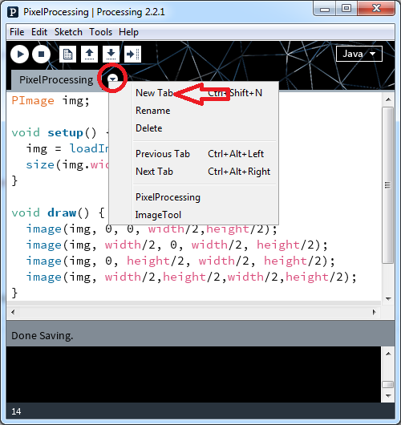
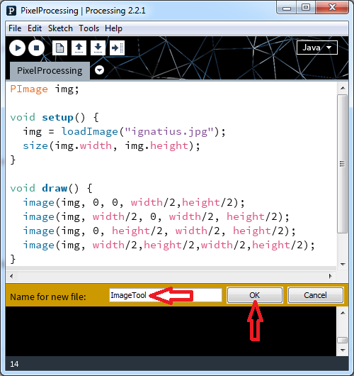

Basic Image Display
This code displays an image in its actual size. Try it out. Note the image() method takes three parameters.


Tiling an Image
This is a 2x2 image tiling pattern. Note the image() method takes five parameters.


So far so good, but if we keep progressing like this as we change our code every time, we won't have much to re-use as we move forward.
The ImageTool Class
Let's store our functions in another class so we may continue to re-use them.

